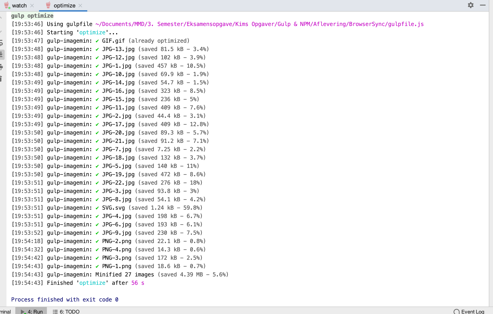

Når man webudvikler er det vigtigt at tænke over filstørrelser, og især på billeder da de hver især kan fylde et par megabites og til sammen mange flere. Det kan gøre brugeroplevelsen på mobile enheder på mobilnetværk ringe hvis der bliver brugt for lang tid på at downloade og loade billeder.
Billedet under viser et eksmempel med en billede mappe der fylder 82.7 megabites før gulp-imagemin har kørt. Efter kommandoen er kørt er der blevet sparet i alt 4.39 megabites (5.6%) i dette tilfælde.
Det er et lidt beskedent resultat, men på større projekter som en webshop med en masse produkt billeder kan besparelsen potentielt være meget større.
